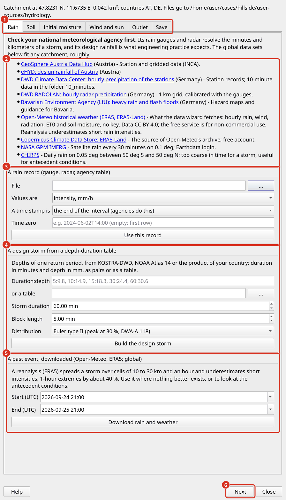

Hydrologie
Eine Hydrologiesimulation berechnet, wie Regen auf einem Einzugsgebiet zu Abfluss wird. Regen fällt auf jeden Knoten des Rechennetzes, ein Teil davon dringt in den Boden ein, ein Teil des Oberflächenwassers verdunstet und der Rest fließt über das Gelände zum Auslass. TELEMAC-2D löst die Flachwassergleichungen über das gesamte Einzugsgebiet, so dass der Hydrograph am Auslass, die Wassertiefen am Hang und die überfluteten Gebiete im Tal aus einem Modell stammen. Dieser Ansatz wird als hydrodynamisches Regen-Abfluss-Modell oder Regen auf dem Netz bezeichnet (Caviedes-Voullième et al. 2012, Fernández-Pato et al. 2016). Es eignet sich für Einzugsgebiete bis zu einigen Dutzend Quadratkilometern, Sturzfluten und Felder und Parzellen, auf denen der Weg des Abflusses wichtig ist, zum Beispiel für die Bodenerosion.
Der Hydrologiemodus ist nur TELEMAC. Es wird in den Fall Einstellungen eingeschaltet, mit dem Kontrollkästchen Hydrology mode auf der Seite Mesh configuration oder auf der Seite Hydrology (Hydrologie) und läuft auf dem Sub-Tab Simulations > Hydrology.

Die Falleinstellungen im Hydrologiemodus. (1) Das Kontrollkästchen Hydrology mode oben im Frame TELEMAC mesh: Es gibt dem Rechennetz nahezu gleiche Dreiecke und graut die Einstellungen aus, die der Modus nicht verwendet, wie das Länge-zu-Breite-Verhältnis von Gerinne-Zellen. (2) Die Kantenlängen des Rechennetzes: Default size außerhalb der Rechennetzzonen; innerhalb einer Zone sein eigenes Max Edge Length (m), sonst die Kantenlänge seines Zonentyps. (3) Die Seite Hydrology mit Regen, Boden, Wind und Sonne und dem Ausgang; sein Schalter und der Kontrollkästchen Hydrology mode sind ein Schalter.
Was sich von einem Flussfall unterscheidet. Dieser Abschnitt kann selbst gelesen werden. Eine Hydrologie Fall verwendet die gleiche Fall-Datei, das gleiche Preprocessing, das gleiche Job-System und das gleiche Postprocessing als Fluss Fall, die die vorherigen Abschnitte beschreiben. Einige ihrer Schritte funktionieren jedoch anders im Hydrologiemodus oder gelten nicht für sie:
Schritt |
Flussfall |
Hydrologiefall |
|---|---|---|
Was den Flow antreibt |
Der Abfluss an den Zuflusslinien und der Wasserstand an den Ausflusslinien (Offene Ränder). |
Der Regen auf jedem Knoten. Der Fall benötigt nur Ausflusslinien; Zuflusslinien sind optional. |
Modellgrenze |
Das Untersuchungsgebiet um das benetzte Gebiet (Geodaten). |
Die Entwässerungsteilung des Einzugsgebiets oder die Ränder eines Feldes (Ränder und Outlet). |
Rechennetz |
Dreiecke erstreckten sich entlang der Gerinne Gerinneachse (Rechennetzkonfiguration). |
Nahezu gleiche Dreiecke überall; kein Gerinneachse. |
Ausgangszustand |
Ein trockenes Bett mit Wasser am Zufluss oder eine vorbenetzte Gerinne (Ausgangsbedingungen). |
Ein trockenes Einzugsgebiet. Der anfängliche Wassergehalt des Bodens ist der ursprüngliche Zustand, der zählt. |
Numerischer Kernel |
Finite Elemente standardmäßig (TELEMAC-Entscheidungen). |
Endliche Bände mit einer Rekonstruktion für dünne Wasserfilme (Konzept). |
Simulation |
Ein stetiger Trockenlauf, dann Hotstarts und instationäre Läufe (Hydraulische Simulationen). |
Ein unruhiger Lauf über den Sturm und die Zeit danach, die auch die Hydrographen der Zuflusslinien trägt. |
Ist der Lauf komplett? |
Zufluss und Ausfluss Balance ( |
Der Wasserhaushalt: Regen, Infiltration, Verdunstung, Ausfluss und das auf dem Einzugsgebiet verbleibende Wasser. |
Flachstes Wasser gezeigt |
1 cm. |
1 mm, weil der Bogenfluss Millimeter tief ist. |
Netzkonvergenzstudie |
Verfügbar (Netzkonvergenz). |
Nicht verfügbar; ein manuelles Verfahren ersetzt es (Netzauflösung, Kalibrierung und Limits). |
Sedimenttransport |
Verfügbar (Morphodynamische Simulationen). |
Nicht verfügbar; der Build lehnt einen Fall ab, der danach fragt. |
Kalibrierung und Validierung |
Verfügbar (Kalibrierung und Validierung). |
Noch nicht verfügbar (Netzauflösung, Kalibrierung und Limits). |
Das Beispiel Fall. example-agrohydrology ist ein Ackerland von 5,6 ha auf einem Hang in Niederbayern bei einem Regen von 42,1 mm in 7 Stunden (Beispielfälle). Sein Leitfaden (README.md im Ordner des Beispiels) geht durch jeden Schritt dieses Abschnitts im Plugin: die Überprüfung, der Build, der Lauf von 7 bis 8 Minuten auf 4 Prozessorkernen, das Laden des Ergebnisses und ein zweiter Lauf auf einem durchlässigeren Boden. Auf der Registerkarte Case Setup lädt Example case… herunter; in einem Terminal lautet der Befehl:
axqua example get example-agrohydrology --folder <folder>
Der Workflow in Kürze. Ein hydrologischer Fall wird in sechs Schritten aufgebaut und ausgeführt, von denen jeder in einem Unterabschnitt unten erklärt wird:
Erstellen Sie den Fall auf der Registerkarte Case Setup und schalten Sie Hydrology mode in seinen Einstellungen (Fallaufbau).
Sammeln Sie Regen-, Boden- und Wetterdaten mit dem Data wizard… auf dem Unterregister Simulations > Hydrology (Datenaufbau, Wind und Verdunstung).
Zeichnen Sie die Ausflusslinien und wählen Sie die Auslassbedingung (Ränder und Outlet).
Überprüfen Sie die Daten und erstellen Sie das Modell auf der Registerkarte Preprocessing (Preprocessing).
Führen Sie den Sturm mit Submit auf dem Unter-Tab Simulations > Hydrology (Lauf und Ergebnisse).
Laden Sie das Ergebnis, lesen Sie den Hydrographen und den Wasserhaushalt und überprüfen Sie die Netzauflösung (Lauf und Ergebnisse, Netzauflösung, Kalibrierung und Limits).
In einem Terminal sind die gleichen Schritte wie folgt; Der letzte Befehl konvertiert das Ergebnis für ParaView und VisIt:
axqua hydrology check <case-file> # the checkup, with the terrain
axqua <case-file> # build the model
axqua submit <case-file> --kind hydrology # run the storm as a job
axqua export <case-file> --result r2d-hydrology.slf
Konzept
Regen im Netz. TELEMAC-2D löst die tiefengemittelten Flachwassergleichungen, die die Erhaltung von Masse und Impuls eines Wassers Layer gegenüber Gelände (Hervouet 2007) ausdrücken. In einem Fluss Fall tritt Wasser durch seine Zufluss Linien in das Modell ein. In einer Hydrologie Fall tritt der Regen als Quellbegriff der Massengleichung bei jedem Knoten ein, und die Infiltration und die Verdunstung gehen als Senken zurück. Das Wasser fließt dann unter Schwerkraft gegen den Widerstand des Bodens abwärts. Die Blattströmung auf einem Hang ist nur Millimeter tief, so dass ihre Widerstandsfähigkeit die der Bodenoberfläche, ihrer Klumpen, Ernterückstände und Vegetation ist, die Hydrologen als Manning-Koeffizient für die Landströmung ausdrücken (Engman 1986). Die Auflösung des Rechennetz bestimmt, welche Furchen, Rills und Vertiefungen das Modell auflöst, und mit ihnen die Wege und die Reisezeit des Abflusses (Caviedes-Voullième et al. 2012).
Infiltration nach Grün und Ampt. Das Green-Ampt-Modell beschreibt Infiltration als eine scharfe Benetzungsfront, die sich in den Boden bewegt (Green und Ampt 1911). Hinter der Front ist der Boden gesättigt, davor behält der Boden seinen ursprünglichen Wassergehalt. Die Infiltrationskapazität \(f\) [m / s] folgt dem Gesetz von Darcy über das benetzte Layer:
where \(K_s\) is the saturated hydraulic conductivity, \(\psi\) the suction head at the wetting front, \(\theta_s\) and \(\theta_i\) the water contents at saturation and at the start, and \(F\) the depth infiltrated so far. At the start of a storm \(F\) is small and the capacity large, so that all rain infiltrates. With growing \(F\) the capacity falls toward \(K_s\). When it falls below the rain intensity, water ponds on the surface and runoff begins (Mein and Larson 1973). Chu (1978) extended the ponding time to rain whose intensity changes from one interval to the next. The product \(a = \psi (\theta_s - \theta_i)\) combines the suction head and the moisture deficit into one length, which is what aXqua passes to TELEMAC per mesh node, together with \(K_s\).
Die Implementierung in TELEMAC. TELEMAC-2D hat seit Release 8.4 (RAINFALL-RUNOFF MODEL : 3) eine Green-Ampt-Option, die integrale Form von Travert et al. (2022). Die erste Implementierung in TELEMAC ist Broich et al. (2022). De Vos et al. (2024) testeten die freigesetzte Form und fanden heraus, dass Teichwasser nicht infiltriert, sobald der Regen aufhört, und dass die Kapazität steigt, wenn der Regen nach dem Teichen intensiviert wird. Sie empfehlen die explizite Lösung von Sadeghi et al. (2024) mit der Teigzeit von Chu (1978). Diese Überarbeitung ist nicht Teil eines TELEMAC-Releases, daher generiert aXqua die Routine selbst (user_fortran/runoff_greenampt.f) und bietet drei Lösungen an:
|
Infiltrationskapazität |
|---|---|
|
Die Vorgabe, nach de Vos et al. (2024): vor dem Eintauchen der genauen Kapazität, so dass alle Regen infiltriert; nach dem Eintauchen der expliziten Lösung von Sadeghi et al. (2024) in der Zeit seit dem Eintauchen. Teichwasser infiltriert nach dem Regen. Ein Knoten auch Teiche, wenn Wasser aus dem Hang steht auf sie tiefer als |
|
Die Kapazität \(K_s (1 + a/F)\) auf der infiltrierten Tiefe jedes Knoten, trat in der Zeit. Dies ist die Form von Travert et al. ohne den Begriff, der den Anstieg der Kapazität verursacht, plus die Infiltration von Teichwasser. |
|
Die Gleichungen TELEMAC gibt zum Vergleich frei. |
Die Tests von aXqua vergleichen die drei Lösungen mit der exakten Green-Ampt-Lösung unter ständigem Regen: Die exact-Lösung stimmt 0,2 % zu, sadeghi infiltriert 1 bis 4 % weniger und travert bis zu 9 % mehr. Auf einem flachen geschlossenen Becken geben TELEMAC mit der generierten Routine und der Referenz von aXqua in Python die gleiche infiltrierte Tiefe auf vier Ziffern, mit dem Finite-Volume- und dem Finite-Elemente-Kernel und auf vier Prozessorkernen.
Regen, Wind und Sonne. Der Regen ist eine Reihe für das gesamte Einzugsgebiet, die über jedes ihrer Intervalle konstant gehalten wird. Der Wind einer Wetterserie wirkt durch die Windbelastung von TELEMAC auf Wasser, das tiefer ist als wind_threshold_depth (1 m), also auf Teiche und Seen, nicht auf den Blattfluss eines Hügels. Die Verdunstung wird dem Oberflächenwasser bei der FAO-56-Referenzverdunstung mal dem Faktor des offenen Wassers, 1,05 für Wasser von weniger als 2 m Tiefe entnommen (Allen et al. 1998). Bodenwasser verdunstet in diesem Modell nicht, da das Green-Ampt-Modell kein Bodenwasserbudget behält, das Wasser zurückgeben könnte. Während eines Sturms sind sowohl Wind als auch Verdunstung gegen den Regen gering; In den Stunden danach leert die Verdunstung die flachen Teiche, die ein zweidimensionales Modell sonst für immer hält.
Der numerische Kernel. Die Blattströmung auf einem Hang ist oft dünner als die Stufe des Bettes zwischen zwei benachbarten Knoten: Eine Steigung von 5 % über Zellen von 4 m ist eine Stufe von 0,2 m unter einem Millimeterfilm. Ein Fluss Fall läuft standardmäßig auf den endlichen Elementen von TELEMAC (TELEMAC-Entscheidungen). Ein hydrologischer Fall läuft auf dem Finite-Volume-Kernel mit dem HLLC Solver (Toro et al. 1994), dessen hydrostatische Rekonstruktion einen Wasserspiegel über einem geneigten Bett in Ruhe hält. Die klassische Rekonstruktion von Audusse et al. (2004) scheitert dort, wo das Wasser flacher ist als die Stufe des Bettes. TELEMAC bietet daher die Rekonstruktion von Chen und Noelle (2017), die seine eigene Regenabfluss-Validierung Fall verwendet, und die den Standard des Hydrologiemodus (kernel: finite-volumes) darstellt. Mit dem Finite-Element-Kernel (kernel: finite-elements) hielt ein Testeinzugsgebiet 30 Minuten nach dem Sturm 13 % seines Regens auf der Oberfläche, gegenüber 0,5 % mit endlichen Volumina. Der finite Volumenkern arbeitet mit einer konstanten turbulenten Viskosität, die für den Bogenfluss ausreichend ist, dessen Widerstand vom Boden und nicht von Turbulenzen in der Wassersäule kommt.
Fallaufbau
Eine Hydrologie Fall ist eine Fall-Datei wie jede andere (aXqua Fall Setup), mit dem Block hydrology. Eine minimale Hydrologie Fall Datei sieht wie folgt aus:
project:
name: my-catchment
crs_epsg: 25832
telemac:
solver: telemac2d
n_processors: 4
geodata:
dem_initial: user-sources/geodata/dem.tif
boundary: user-sources/geodata/catchment.gpkg
boundaries:
liquid_boundaries: user-sources/geodata/outlet.gpkg
mesh:
default_size: 5.0 # [m]
hydrology:
enabled: true
rainfall: user-sources/hydrology/rainfall.csv
soil_texture: silt loam
initial_water_content: 0.25
Die Seiten der Fall-Einstellungen sind die eines Flusses Fall, in der gleichen Reihenfolge. Was jeder von ihnen für ein Einzugsgebiet bedeutet:
Project settings (Projekteinstellungen). Wie in einem Flussfall: ein metrisches Koordinatenbezugssystem, die Eingangsdaten in user-sources/ und alles, was aXqua in axqua-case/ produziert. Das Ergebnis des Laufs ist axqua-case/simulation/r2d-hydrology.slf; der Hydrograph und die Wasserbilanz gehen zu axqua-case/postprocessing/hydrology/.
Geodata (Geodaten). Das Gelände-Modell (dem_initial) und der Umriss des Einzugsgebiets (boundary) sind erforderlich. Die Gliederung folgt der Entwässerungsteilung, die QGIS aus dem Gelände-Modell und der Position des Auslasses mit den Werkzeugen seines Processing Toolbox (z. B. GRASS > r.water.outlet) ableitet; zeichnen Sie es auf einen Hügel des Gelände-Modells und überprüfen Sie es mit dem Hydrologie-Checkup (Preprocessing). Rechennetzzonen (mesh_zones) sind optional und setzen ein feineres oder gröberes Rechennetz in Teilen des Einzugsgebietes, durch ihr Feld Max Edge Length (m). Streams und Gräben, die als breaklines gezeichnet werden, erhalten ein feineres Rechennetz entlang ihnen. Rauheitszonen (roughness_zones und roughness_table) geben verschiedenen Oberflächen ihre eigene Rauheit. Die Gerinne Gerinneachse wird nicht genutzt. Strukturen (structures), wie Böschungen, Mauern und Gebäude, werden auf dem Gelände wie in einem Flussfall angebracht.
Liquid boundaries (Offene Ränder). Der Layer liquid_boundaries hält die Ausflusslinien, mit dem Wort outflow im Feld Type (inflow/outflow), wie in einem Fluss Fall. Ein hydrologischer Fall braucht keinen Abfluss und keinen Wasserstand. Wo die Ausflusslinien platziert werden und welche Bedingung sie erhalten, wird in Ränder und Outlet erklärt. Eine Zuflusslinie bringt das Wasser eines Einzugsgebiets stromaufwärts, das nicht Teil des Modells ist: Es nimmt die Konstante Abfluss boundaries.prescribed_flowrate oder den Hydrographen boundaries.inflow (eine Tabelle der Zeit und Abfluss), dem der Hydrologielauf folgt. Ohne Ausflusslinie ist das Einzugsgebiet geschlossen und hält den ganzen Regen, und der Checkup sagt es.
Initial conditions (Ausgangsbedingungen). Das Einzugsgebiet beginnt auszutrocknen. Nur eine Zuflusslinie bekommt die kurze Wasserstrecke des Trockenstarts, denn TELEMAC kann einen Abfluss nicht durch einen Trockenabschnitt verschreiben. Die vorbenetzte Gerinne und die Trocknung dünner Filme eines Flusses Fall sind im Hydrologiemodus nicht verfügbar. Die erste Bedingung, die zählt, ist der Wassergehalt des Bodens (Datenaufbau).
Mesh configuration (Rechennetzkonfiguration). The check box Hydrology mode gives the mesh near-equal triangles everywhere. default_size is the edge length outside the mesh zones, breakline_size the edge length along the breaklines, and growth_ratio (1.2) the largest size ratio of neighboring triangles. The edge length decides which furrows and rills the model resolves and how long the run takes. A mesh with the edge length \(h\) has about \(1.15\,A/h^2\) nodes on an area \(A\): 16,600 on the example field of 5.6 ha with 2 m, and about 58,000 on a catchment of 5 km² with 10 m. Halving \(h\) gives four times the nodes and, through the time step, about eight times the computing time, so a large catchment gets a coarse default_size and finer mesh zones along its streams.
Wall roughness (Wandrauheit). Die Rauheit des Bodens ist die Rauheit des Bettes. Ein Fluss Fall beschreibt es durch das äquivalente Sandrauheit \(k_s\) von Nikuradse, das Wasser viel tiefer als die Rauheit-Elemente voraussetzt. Blattfluss ein paar Millimeter tief verläuft zwischen Klumpen und Stiele, die höher sind als das Wasser tief ist, so dass eine Hydrologie Fall nimmt in der Regel einen Manning oder Strickler Koeffizient für Überlandfluss (Engman 1986), entweder für das gesamte Einzugsgebiet mit friction.default_law und friction.default_coefficient oder pro Rauheitszone mit friction.roughness_law. Das Beispiel Fall verwendet einen Strickler-Koeffizienten von 30 m1/3/s (Mannings :math:`n`=0,033) auf dem gesamten Feld. Die Rauheit der geschlossenen Ränder spielt in einem Einzugsgebiet keine Rolle.
Hydraulic simulation (Hydraulische Simulation). duration, flux_tolerance und turbulence_model eines Flusses Fall gelten nicht: Die simulierte Zeit folgt dem Regen und hydrology.drain_time, der Lauf wird nach seinem Wasserhaushalt beurteilt und der Kernel wird von hydrology.kernel gesetzt. hydrodynamics.wet_depth, das flachste Wasser, das in den Berichten und auf den Karten als nass gilt, ist 1 mm im Hydrologiemodus, es sei denn, der Fall setzt einen anderen Wert fest. Die Anzahl der Prozessorkerne wird im Profil des Computers (mpi_processes, Definieren Sie Solver Bindungen) oder, ohne sie, von telemac.n_processors festgelegt.
Hydrology (Hydrologie). Der Block hydrology hält den Regen, den Boden, das Wetter und den Auslass. Die Daten Assistent schreibt die meisten dieser Einträge (Datenaufbau):
Eingang |
Ausfall |
Bedeutung |
|---|---|---|
|
erforderlich |
Die Regen-Serie: eine Tabelle von Zeit und Regen (Datenaufbau). |
|
|
|
|
|
Ob ein Zeitstempel der |
|
leer |
Datum und Uhrzeit der Zeit Null des Modells, für eine Reihe mit Datumsangaben. |
|
|
|
|
|
Die Lösung des Green-Ampt-Modells: |
|
ja, 0,001 m |
Ein Knoten mit Wasser aus der Steigung tiefer als |
|
leer, |
Polygone der Bodenzonen und das Feld ihrer Zonennummer. |
|
leer |
Die Parameter jeder Bodenzone (Datenaufbau). |
|
leer |
Eine USDA-Texturklasse für das gesamte Einzugsgebiet, ohne Tabelle. |
|
leer |
Der Wassergehalt des Bodens zu Beginn [m3/m3], für Zonen ohne eigenen Wert. |
|
0.3 |
Die effektive Sättigung, die gilt, wenn kein anfänglicher Wassergehalt angegeben wird. |
|
leer |
Polygone von Dächern und Straßen, auf denen nichts infiltriert. |
|
leer, nein, |
Die Wetterserie und was davon genommen wird (Wind und Verdunstung). |
|
|
Der Widerstand des Windes und die Tiefe, unter der der Wind nicht wirkt. |
|
1.05 |
Verdunstung von offenem Wasser als Vielfaches der Referenz-Evapotranspiration. |
|
|
Der Zustand der Ausflusslinien und für |
|
3600 s |
Simulierte Zeit nach dem letzten Regen. |
|
300 s |
Intervall der Ergebniskarten. |
|
|
Der numerische Kernel: |
Morphodynamic simulation, OpenFOAM und Calibration and validation. Sedimenttransport mit GAIA, der Austausch mit einem porösen Körper und die internen Quellgebiete eines Flusses Fall werden im Hydrologiemodus abgelehnt, weil der Hydrologielauf keine davon schreibt. OpenFOAM hat keinen Hydrologiemodus. Die Kalibrierung ist noch nicht für Hydrologieläufe verfügbar (Netzauflösung, Kalibrierung und Limits).
Datenaufbau
Ein hydrologischer Fall braucht ein Geländemodell, den Umriss des Einzugsgebietes, eine Regenserie und einen Boden. Das Wetter ist optional. Der Data wizard… auf der Unterkarte Simulations > Hydrology führt durch die Daten, eine Registerkarte für jede Art:
Die Daten Assistent. Jede Registerkarte listet zuerst die Datenportale der nationalen Wetterbehörde für das Land des Einzugsgebiets auf und dann die Routen, die aXqua hat. Die nationale Agentur steht aus einem Grund an erster Stelle: ihr Regen Pegel und Radar lösen die Minuten und Kilometer eines Sturms auf, und ihr Designregen ist das, was die Ingenieurpraxis erwartet. Globale Datensätze füllen sich dort aus, wo nichts anderes zur Hand ist. Nichts wird vor Save in die Fall-Datei geschrieben; die Dateien, die eine Route erzeugt, gehen neben der Fall-Datei in user-sources/hydrology, jede mit einer Provenienzdatei, die die Quelle, ihre Lizenz und die erforderliche Zuordnung benennt.
Tab. |
Strecken |
|---|---|
Regen |
Eine Regenaufzeichnung (eine Tabelle von Zeit und Regen in mm/h oder mm pro Intervall); ein Designsturm aus einer Tiefen-Dauer-Tabelle einer Rückgabeperiode, wie KOSTRA-DWD in Deutschland oder NOAA Atlas 14 in den Vereinigten Zustände, verteilt als Euler Typ II (DWA-A 118), alternierender Block (Chow et al. 1988) oder ein Block; oder ein vergangenes Ereignis, das aus dem Archiv von Open-Meteo (ERA5 und ERA5-Land) heruntergeladen wurde. Eine Reanalyse unterschätzt kurze Intensitäten, 1-Stunden-Extreme um etwa 40%. |
Boden |
Eine Bodenkarte mit einer Zonenzahl pro Polygon und einer Tabelle der Zonen; eine Texturklasse für das gesamte Einzugsgebiet; oder die Texturen von ISRIC SoilGrids (250 m). Versiegelte Oberflächen von einem eigenen Layer oder von der Klasse, die von ESA WorldCover (10 m) aufgebaut wurde. |
Anfangsfeuchte |
Ein Wert oder die Bodenfeuchte von ERA5-Land (0 bis 7 cm) zu Beginn der Veranstaltung. |
Wind und Sonne |
Die Wetterreihe, ob sein Wind angewendet wird und wie die Verdunstung berechnet wird. |
Auslauf |
Der Zustand der Ausflusslinien und des numerischen Kernels (siehe unten). |


Der Datenassistent. (1) Ein Tab für jede Art von Daten. (2) Die Portale der nationalen Agenturen für die Länder des Einzugsgebiets, dann die globalen Datensätze. (3) Eine eigene Regenaufzeichnung, von einem Pegel, einem Radarprodukt oder einer Tabelle der Agentur. (4) Ein Designsturm aus der Tiefen-Dauer-Tabelle einer Rückgabeperiode. (5) Ein vergangenes Ereignis, das von Open-Meteo heruntergeladen wurde. (6) Next geht zum nächsten Tab; Save schreibt auf dem letzten Tab die Auswahlmöglichkeiten in die Fall-Datei.
Regenserie. Ein Zeitstempel einer Regenaufzeichnung ist der Beginn oder das Ende ihres Intervalls. Agenturen prägen das Ende: Der Regen von 12:00 bis 13:00 Uhr wird um 13:00 Uhr gemeldet, was der Standard von rainfall_stamp ist. Die Zeit Null des Modells ist der Beginn des ersten Intervalls oder rainfall_start für eine Reihe mit Daten.
Die Stationsdateien des DWD Klimadatenzentrums werden beim Herunterladen gelesen. MESS_DATUM hält das Datum als eine Zahl (2024060213), und die Regensäulen sind Tiefen in mm, was auch immer rainfall_units und rainfall_stamp sagen: R1 ist die Stunde vor dem Stempel, RWS_10 die 10 Minuten davor und RS der Niederschlagstag des DWD, der von 05:50 UTC des Datums bis 05:50 UTC des nächsten Tages läuft (07:30 Ortszeit vor April 2001). Ein Tageswert wird daher etwa sechs Stunden nach Mitternacht platziert und ist viel zu grob, um einen Sturm aufzulösen. Andere Daten, die als eine Zahl geschrieben sind, wie die time Spalte von MeteoSchweiz, werden ebenfalls als Daten gelesen.
Die Hyetographendatei von TELEMAC selbst, deren erste Zeile mit #HYETOGRAPH beginnt, wird gelesen, wenn TELEMAC sie liest: Die beiden Zeilen ihrer Kopfzeile werden übersprungen, jede weitere Zeile gibt eine Zeit in Sekunden und die Regentiefe in mm des Intervalls an, das zu diesem Zeitpunkt endet, und die erste Zeile markiert, wo die Serie beginnt. Das Beispiel Fall verwendet eine solche Datei.
Ein Wert von -999, der Code des DWD für eine fehlende Messung oder eine leere Zelle ist keine Messung. Im Regen bleibt es ein eigenes Intervall, als trocken simuliert, und der Checkup benennt die Lücken; in der Wetterserie wird es zwischen den Messwerten um ihn herum interpoliert. Ein Wert des DWD deckt seine eigene Stunde, 10 Minuten oder Tag ab, so dass eine Stunde oder ein Tag, den eine Datei überhaupt nicht hat, auch eine Lücke ist, anstatt vom nächsten Wert abgedeckt zu werden. Eine Einheitenreihe unter der Kopfzeile und eine Summe am Ende werden ausgelassen. Eine Zeile innerhalb der Daten, deren Zeit nicht gelesen werden kann, stoppt den Import mit diesem Wert, weil sein Regen nicht rechtzeitig platziert werden konnte.
Bodenparameter. Die Bodentabelle hat eine Zeile pro Zone, mit den Spalten zone_id, texture, ks_mm_h, suction_m, theta_s und theta_i; ein Wert, den eine Zeile leer lässt, stammt aus ihrer Texturklasse. Wo keine Messungen existieren, geben Rawls et al. (1983) mittlere Green-Ampt-Parameter für die elf USDA-Texturklassen an:
Texturklasse |
\(K_s\) [mm/h] |
\(\psi\) [m] |
\(\theta_s\) |
\(\theta_r\) |
|---|---|---|---|---|
Sand |
117.8 |
0.050 |
0.437 |
0.020 |
Lehmsand |
29.9 |
0.061 |
0.437 |
0.036 |
Sandlehm |
10.9 |
0.110 |
0.453 |
0.041 |
Lehm |
3.4 |
0.089 |
0.463 |
0.029 |
Schlamm |
6.5 |
0.167 |
0.501 |
0.015 |
Sandlehm |
1.5 |
0.219 |
0.398 |
0.068 |
Tonlehm |
1.0 |
0.209 |
0.464 |
0.155 |
Schlammlehm |
1.0 |
0.273 |
0.471 |
0.039 |
Sandton |
0.6 |
0.239 |
0.430 |
0.109 |
Schlammton |
0.5 |
0.292 |
0.479 |
0.056 |
Ton |
0.3 |
0.316 |
0.475 |
0.090 |
\(\theta_s\) is the total porosity and \(\theta_r\) the residual water content. The values are means over many soils of each class, and a single soil may differ from them by an order of magnitude in \(K_s\). The water content at the start of the event is the most sensitive of all inputs: a soil near saturation takes up little rain. It is given as initial_water_content or per zone; without it, aXqua assumes an effective saturation of 0.3 and the checkup says so.
Wind und Verdunstung
Die Wetterserie ist eine Zeittabelle und eine der Spalten wind_speed_10m, wind_direction_10m (die Richtung, aus der der Wind kommt), shortwave_radiation [W/m2], temperature [°C], relative_humidity [%], et0 [mm/h] und evaporation [mm/h]. Seine Zeitstempel folgen rainfall_stamp. Mit wind: true verwandelt aXqua Geschwindigkeit und Richtung in die beiden Komponenten des Windes und schreibt sie für TELEMAC (atmosphere.txt); der Luftwiderstandskoeffizient folgt Flather (wind_formula).
evaporation nimmt einen von vier Werten an: none; et0, die Spalte et0 mal open_water_factor; penman, die stündliche FAO-56 Penman-Monteith-Gleichung aus Strahlung, Temperatur, Feuchtigkeit und Wind am Ort des Einzugsgebiets (Allen et al. 1998, eq. 53); und series, die Säulenverdampfung, wie sie ist. Die Verdunstung nimmt nie mehr als das Oberflächenwasser, das nach der Infiltration vorhanden ist.
Ränder und Outlet
Der Umriss ist eine Wand. Der Umriss eines hydrologischen Falls ist die Entwässerungsteilung des Einzugsgebiets. Entlang einer Kluft ist eine feste Wand keine Annäherung, sondern die Definition der Kluft: kein Oberflächenwasser kreuzt sie. Wo der Umriss nicht die Kluft ist, fällt das Gelände aus dem Bereich unter der Wand, und im Modell sammelte sich das Wasser in den Hangteichen. Der Hydrologie-Checkup findet diese Orte (Überprüfung vor der Verarbeitung).
Das Outlet. Wasser verlässt durch die Ausflusslinien von boundaries.liquid_boundaries, gezeichnet auf dem Umriss über den Auslass des Einzugsgebiets. Wie in einem Flussfall (Offene Ränder) ist jeder Knoten des Umrisses, der nicht von einer Linie abgedeckt wird, ein geschlossener Rand. Zuflusslinien sind optional und tragen die Hydrographen von Einzugsgebieten, die nicht Teil des Modells sind. hydrology.outlet_condition legt fest, was die Ausflusslinien vorschreiben:
Auslauf |
Bedeutung |
|---|---|
|
Der Ausfall. TELEMACs Stufen-Entladungs-Kurve Z(Q) jeder Ausflusslinie: die Höhe, in der der Abschnitt dieser Linie den Abfluss in gleichmäßiger Strömung aus dem Gelände-Modell, das Bett Rauheit des Abschnitts und die Bettschrägheit vor ihm fördert. Eine gemessene Abflusskurve ( |
|
Nichts ist vorgeschrieben: Tiefe und Geschwindigkeit haben keine Steigung über die Linie. Dies gilt nur dort, wo die Strömung überkritisch an einem steilen und glatten Austritt austritt. |
|
Die feste Ebene |
|
An den Ausflusslinien wird kein Wasser gehalten: das Wasser verlässt wie über einem Rand, höchstens bei kritischem Fluss, und keins kommt zurück. Für einen Umriss, der keine Kluft ist, sondern der untere Rand eines Feldes, einer Terrasse oder einer Bank, über die das Gelände fällt. |
normal_depth ist das Gegenstück zur Ausflussbedingung stage_discharge eines Flusses Fall, mit einem Unterschied: Ein Fluss Fall nimmt den Pegel von der Abflusskurve am Abfluss, der in das Modell eintritt, was für einen stetigen Lauf eine Ebene ist, während TELEMAC den Pegel eines Hydrologieauslasses entlang der Kurve mit dem Abfluss bewegt, der ihn durchlässt.
Ein freier Auslass scheint die natürliche Wahl zu sein, da der Nullgradient auf einer gleichmäßigen Steigung der normale Fluss ist. In den Tests von aXqua war es nicht: eine Gerinne mit 2 % mit einem Manning-Koeffizienten von 0,03 läuft einige Zentimeter tief in der Nähe von kritischem Fluss, und sein freier Auslass füllte sich in einen stehenden Teich mit dem Finite-Volume-Kernel und wurde instabil mit dem Finite-Elemente-Kernel, wo TELEMAC Geschwindigkeiten meldete, die durch den freien Rand eintreten. normal_depth hat das Gleichgewicht Abfluss \(Q = i A\) des gleichen Einzugsgebietes mit beiden Kerneln auf 0,01 % abgelassen.
Ein Feld statt ein Einzugsgebiet. Ein Feld, ein Grundstück oder eine Terrasse ist oft Gegenstand einer Studie, und ihr Umriss ist keine Kluft: Wasser lässt es über ganze Ränder hinweg, wo auch immer das Gelände darüber hinaus fällt. Diese Kanten sind Ausflusslinien, und overfall ist ihre Bedingung. TELEMAC setzt die Tiefe bei einem Knoten eines vorgeschriebenen Niveaus auf das Niveau minus der Sohlhöhe und auf Null, wo dies negativ ist. aXqua schreibt daher eine Ebene 1 m unterhalb der untersten Knoten des Rechennetzes vor, und jeder Knoten der Linien erhält eine Tiefe von Null. Der endliche Volumenkern nimmt diese Tiefe als trockenen Zustand außerhalb der Linie an, so dass Wasser aus einer feuchten Zelle so fließt, wie es in trockenes Land fließt, und kein Wasser kann hereinkommen. Der Finite-Elemente-Kernel hält die Knoten der Linien trocken, die auf dem Beispielfeld auch kein Wasser einlassen. Eine Z(Q)-Kurve passt nicht zu einer solchen Kante, da eine Ebene für eine Kante, die über die Steigung verläuft, nur die Höhe ihres tiefsten Punktes ist. Der freie Auslass kopiert den Zustand innerhalb der Domäne nach außen, so dass Wasser dort einfließt, wo die Geschwindigkeit am Rand in die Domäne zeigt. Auf dem Ackerfeld des Beispiels Fall example-agrohydrology nahm ein freier Auslass 16 Minuten nach Beginn des Abflusses 2,7 m3/s durch den unteren Rand des Feldes. Die anderen Ränder eines Feldes bleiben Wände, so dass das Feld keinen Anlauf von seinen Nachbarn erhält. Die Hydrologieprüfung zeigt, ob das eigene Wasser noch eine Wand überquert.
Roughness of the outlet. The level of normal_depth depends on the roughness of the outlet section. With Manning’s equation, \(h \sim (n Q / (b \sqrt{S}))^{3/5}\), so that an error of 20 % in \(n\) changes the depth at the outlet by about 12 %. The disturbance fades upstream over a length of about \(h/S\): 50 m for a depth of 0.5 m on a slope of 1 %, 1 km for a depth of 1 m on a slope of 0.1 %. The outlet therefore belongs a few such lengths downstream of where results are read. The roughness is that of the roughness zones at the outlet, or of friction.default_law and default_coefficient. The keyword LAW OF FRICTION ON LATERAL BOUNDARIES plays no part: TELEMAC applies it to solid walls only.
Warum nicht eine Tiefe von der lokalen Geschwindigkeit. Eine Bedingung, die die Tiefe an jedem Auslass Knoten aus der lokalen Geschwindigkeit mit der Manning-Gleichung festlegt, schreibt eine Tiefe vor, die überall dort auf Null geht, wo die Geschwindigkeit klein ist, was Teichwasser zu Beginn und während der Rezession ableitet, und es speist die Geschwindigkeit zurück in die vorgeschriebene Tiefe, die im unterkritischen Fluss oszilliert. Die Z(Q)-Kurve des gesamten Abschnitts hat die gleiche Physik ohne dieses Feedback.
Preprocessing
Der Preprocessing baut einen hydrologischen Fall mit den gleichen fünf Schritten wie ein Flussfall (aXqua Workflow), und Build auf der Registerkarte Preprocessing startet ihn als Job. In einem Terminal ist der Befehl axqua <case-file>. Was die Schritte im Hydrologiemodus tun:
Gelände. Das Gelände-Modell wird zum Koordinatenbezugssystem des Falls umgebaut und auf den Umriss geschnitten.
Rechennetz. Gmsh (Geuzaine und Remacle 2009) teilt das Einzugsgebiet mit seinem Frontal-Delaunay-Algorithmus in nahezu gleiche Dreiecke, und jeder Knoten erhält seine Sohlhöhe vom Gelände-Modell, seine Rauheitszone und seinen Boden: \(K_s\) (
KS), das Produkt von Saugkopf und Feuchtigkeitsdefizit (GA SUCTION A) und das Feuchtigkeitsdefizit (GA DELTA THETA), das TELEMAC aus der Geometriedatei liest. Wie in einem Flussfall ergeben zwei Builds aus identischen Inputs Rechennetze, die sich in der Anzahl der Knoten um weniger als 1 % unterscheiden (Maschen).Ränder. Die Knoten auf den Ausflusslinien erhalten den Code
5 4 4(eine vorgeschriebene Ebene) oder, mit einer freien Steckdose,4 4 4; die Knoten auf Zuflusslinien4 5 5; alle anderen Knoten des Umrisses sind Wände (2 2 2).Simulationseinstellungen. aXqua schreibt den Antrieb (Regen und Verdunstung,
forcing.txt), den Wind (atmosphere.txt), die Auslasskurven vonnormal_depth, die generierte Infiltrationsroutine (user_fortran/runoff_greenampt.f) und das Steuerdateihydrology2d.cas. Es wird keinsteady2d.casgeschrieben, weil ein Einzugsgebiet keinen stationären Zustand hat.Messungen. Feldmessungen des Falls werden wie in einem Flussfall zusammengestellt; die Kalibrierung, die sie liest, steht für Hydrologieläufe noch nicht zur Verfügung.
Das Modell wird an axqua-case/simulation/ geschrieben. In Bezug auf einen Flussfall berichtet die Protokolldatei axqua.log in diesem Ordner über die Qualität des Rechennetzes mit seiner kürzesten Kante, die den Zeitschritt des gesamten Laufs begrenzt, und den Boden, den jede Zone erhalten hat.
Der Hydrologie-Checkup. Vor dem Bau untersucht die Hydrologie-Prüfung die Daten des Falls; es wird mit den anderen Prüfungen in Überprüfung vor der Verarbeitung beschrieben. Seine Ergebnisse werden in der Box Hydrology checkup der Registerkarte Preprocessing und auf der Unterkarte Simulations > Hydrology angezeigt, und es läuft am Anfang jedes Builds, wo ein Fehler den Build stoppt. axqua check <case-file> schließt es ohne die Analyse des Gelände-Modells ein, das axqua hydrology check <case-file> und die Schaltfläche Check hinzufügen. Der Checkup:
liest die Regenserie und die Wetterserie und benennt Lücken, einen ungewöhnlich intensiven Regen, Regen aus einer Reanalyse und Wetter, das den Lauf nicht abdeckt;
überprüft die Bodenzonen und ihre Werte gegen die Texturklassen von Rawls et al. (1983) und benennt einen fehlenden Ausgangswassergehalt;
benennt ein geschlossenes Einzugsgebiet ohne Ausflusslinie, einen freien Auslass, den Finite-Elemente-Kernel und eine für die Größe des Einzugsgebiets kurze Entwässerungszeit und schätzt die Anzahl der Elemente des Rechennetzes;
Leitet das Wasser jeder Zelle des Gelände-Modells zum Umriss (vorrangige Flut, Barnes et al. 2014) und benennt jeden Abschnitt einer Mauer, über die ein großes Gebiet fließt, wo der Umriss nicht der Kluft folgt;
füllt die geschlossenen Vertiefungen des Gelände-Modells bis zu ihrem Verschüttegrad und benennt die größten mit ihrem Volumen, denn eine Vertiefung hält den Regen bis er voll ist. Das ist richtig für einen Teich und falsch, wo das Gelände-Modell einen Durchgang oder die Öffnung einer Brücke blockiert, die dann in das Gelände-Modell geschnitten oder als Ausflusslinie modelliert werden muss.
Jedes Finden nennt sein Heilmittel, und Warnmeldungen und Fehlermeldungen erklären jeden von ihnen.
Lauf und Ergebnisse
Der Lauf beginnt trocken und dauert bis drain_time nach dem letzten Regen. Submit auf dem Unterregister Simulations > Hydrology führt es als Job aus, der fortgesetzt wird, wenn QGIS geschlossen wird (Ausführung des Auftrags); in einem Terminal lautet der Befehl axqua submit <case-file> --kind hydrology. Die Spalte Progress der Jobliste zeigt den simulierten Anteil des Sturms. Es gibt keinen stationären Zustand und keinen Hotstart: Jeder Lauf beginnt vom Trockeneinzug und ersetzt das Ergebnis des vorherigen, also kopieren Sie den Ordner axqua-case/ vor einem Lauf, dessen Vorgänger beibehalten werden soll.

Das Unterregister Hydrology des Tabs Simulations. (1) Das Unterregister (2) Build bereitet den Fall vor, Submit führt es als Job aus. (3) Die Daten des Falls, mit der Position und dem Bereich des Einzugs. (4) Die Ergebnisse des Hydrologie-Checkups. (5) Data wizard… öffnet den Assistenten (Bild oben); Check führt den Checkup erneut durch, einschließlich der Analyse des Gelände-Modells.
Nach dem Lauf schreibt aXqua in postprocessing/hydrology:
hydrograph.csvundhydrograph.png: der Regen oben, der Abfluss am Auslass unten, über eine Zeitachse;water-balance.csv: Regen, Zufluss, Ausfluss, infiltrierte und verdampfte Volumina, das auf dem Einzugsgebiet verbleibende Wasser, der Massenfehler von TELEMAC, der Ablaufkoeffizient (Ausfluss über Regen) und der Peak Abfluss mit seiner Zeit.
Die Volumina stammen aus der eigenen Wasserbilanz von TELEMAC und aus der Zeile AXQUA HYDROLOGY, die die generierte Routine in die Auflistung schreibt. Die Wasserbilanz tritt an die Stelle der Flussbilanz eines Flusses Fall (TELEMAC Trockenläufe 2D/3D): Regen und Zufluss gleichen Infiltration, Verdunstung, Ausfluss und das Wasser auf dem Einzugsgebiet, und der Rest ist der Fehler des Volumens. Auf den Testeinzugsgebieten und dem Beispiel Fall schließt er sich weniger als 0,001 % des Regens. Das am Ende auf dem Einzugsgebiet zurückbleibende Wasser weist auf Vertiefungen oder auf eine zu kurze Abflusszeit hin.
Maps. Load results fügt die Wassertiefe, die Geschwindigkeit, die infiltrierte Tiefe und TELEMACs hohe Wassermarke und höchste Geschwindigkeit des Laufs zu QGIS hinzu, mit den Stilen von QGIS-Kartenerzeugung. Die Karte der Wassertiefe zeigt Wasser ab 1 mm, da der Blattstrom eines Hangs Millimeter tief ist; ein Flussfall beginnt bei 1 cm. Der Schwellenwert ist hydrodynamics.wet_depth, den ein Fall auf einen anderen Wert setzen kann. TELEMAC selbst zeichnet seine Maxima nur dort auf, wo das Wasser tiefer als 1 cm ist (preres_telemac2d.f), so dass auf einem Hang die hohe Wassermarke und die höchste Geschwindigkeit die Furchen, Gerinne und Teiche zeigen und nicht den Blattfluss zwischen ihnen. Das Ergebnis hält eine Karte jeder printout_period. Der Temporal Controller von QGIS tritt durch sie hindurch und aXqua > Export movie verwandelt sie in ein Video des Sturms (QGIS-Kartenerzeugung). Für ParaView und VisIt konvertiert axqua export <case-file> --result r2d-hydrology.slf das Ergebnis in VTK-Dateien (Export von TELEMAC-Ergebnissen).
Diskspace. Clean Up (Freigeben des Scheibenraums) bietet an, die früheren Zeitschritte der Ergebnisse zu entfernen. Für einen Flussfall sind dies die Füllung des Flussabschnitts; für einen hydrologischen Fall sind sie der Sturm selbst. Der Hydrograph und der Wasserhaushalt werden beibehalten, weil sie aus der Auflistung gelesen werden, und die hohe Wassermarke und die höchste Geschwindigkeit werden im letzten Zeitschritt beibehalten, aber die Karten des Sturms sind verloren. Halten Sie jeden 5. oder 10. Zeitschritt statt nur den letzten.
Netzauflösung, Kalibrierung und Limits
Netzauflösung. Die Netzkonvergenzstudie von aXqua (Netzkonvergenz) vergleicht Steady Runs an den Messpunkten und ist daher im Hydrologiemodus nicht verfügbar: Ein Sturm hat keinen stationären Zustand. Die Frage, die es beantwortet, bleibt bestehen, denn das Rechennetz entscheidet, welche Strömungswege ein Einzugsmodell auflöst (Caviedes-Voullième et al. 2012). Es wird mit dem gleichen Verfeinerungsverhältnis von 1,3 beantwortet, das die Studie verwendet (Celik et al. 2008). Kopieren Sie die Fall-Datei, setzen Sie mesh.size_scale: 0.77 in der Kopie (alle Kantenlängen geteilt durch 1.3) und ein project.sim_dir seiner eigenen, bauen und ausführen, und vergleichen Sie den Ablaufkoeffizienten, den Peak Abfluss und seine Zeit mit denen des ursprünglichen Rechennetzes. Wenn sie sich um weniger als die akzeptierte Toleranz (5 % in Netzkonvergenz) ändern, ist das gröbere Rechennetz in Ordnung. Mit einem dritten Rechennetz, noch einmal verfeinert, kann für jede dieser Größen der Gitterkonvergenzindex von Celik et al. (2008) berechnet werden. Jede Verfeinerung um 1,3 kostet etwa das 2,2-fache der Rechenzeit des bisherigen Rechennetzes.
Kalibrierung. Die Bayes-Kalibrierung mit HydroBayesCal (Kalibrierung und Validierung) passt die Parameter stetiger Flussläufe an gemessene Tiefen und Geschwindigkeiten an. Es ist noch nicht für Hydrologieläufe verfügbar, und das Plugin bietet keine Kalibrierung für einen Fall im Hydrologiemodus. Ein gemessener Auslass-Hydragraph wird stattdessen mit hydrograph.csv verglichen. Die Parameter, die zuerst angepasst werden müssen, sind der anfängliche Wassergehalt und \(K_s\), die steuern, wie viel Regen abfließt, und dann die Rauheit, die steuert, wann der Abfluss am Auslass ankommt. Fernández-Pato et al. (2016) kalibrierten auf diese Weise Green-Ampt-Parameter eines Flachwassermodells und stellten fest, dass die kalibrierten Werte von den Anfangsbedingungen des Einzugsgebiets und dem Regenmuster des Ereignisses abhängen. Parameter, die für einen Sturm kalibriert wurden, sollten daher mit einem anderen Sturm validiert werden, genauso wie ein Flussmodell in einer anderen Abflusssituation (Kalibrierung und Validierung) validiert wird.
Grenzwerte. Der Hydrologiemodus simuliert Oberflächenabfluss mit Infiltration. Es simuliert keine Strömung unter der Oberfläche: Wasser, das infiltriert, ist aus dem Modell verschwunden und kehrt nicht als Interflow oder Grundwasserabfluss zurück. Ein Einzugsgebiet, dessen Ströme einen Grundstrom führen, erhält somit diesen Grundstrom durch eine Zuflussleitung. Bodenwasser verdunstet nicht (Konzept), der Regen ist im Weltraum einheitlich und Schnee ist nicht dargestellt. Gridded Radarregen ist für eine spätere Version geplant.
Referenzen
Allen, R. G., Pereira, L. S., Raes, D. and Smith, M. (1998). Crop evapotranspiration. FAO Irrigation and Drainage Paper 56. FAO, Rome.
Audusse, E., Bouchut, F., Bristeau, M.-O., Klein, R. and Perthame, B. (2004). A fast and stable well-balanced scheme with hydrostatic reconstruction for shallow water flows. SIAM Journal on Scientific Computing, 25(6), 2050-2065.
Barnes, R., Lehman, C. and Mulla, D. (2014). Priority-flood: An optimal depression-filling and watershed-labeling algorithm for digital elevation models. Computers & Geosciences, 62, 117-127.
Broich, K., Obermaier, T., Alcamo, L. and Disse, M. (2022). TELEMAC as a hydrodynamic rainfall-runoff model: New extension using the Green-Ampt-infiltration. Proceedings of the XXVIIIth TELEMAC User Conference, Paris-Saclay, 143-145. https://hdl.handle.net/20.500.11970/110848
Caviedes-Voullième, D., García-Navarro, P. and Murillo, J. (2012). Influence of mesh structure on 2D full shallow water equations and SCS Curve Number simulation of rainfall/runoff events. Journal of Hydrology, 448-449, 39-59.
Celik, I. B., Ghia, U., Roache, P. J., Freitas, C. J., Coleman, H. and Raad, P. E. (2008). Procedure for estimation and reporting of uncertainty due to discretization in CFD applications. ASME Journal of Fluids Engineering, 130(7), 078001.
Chen, G. and Noelle, S. (2017). A new hydrostatic reconstruction scheme based on subcell reconstructions. SIAM Journal on Numerical Analysis, 55(2), 758-784.
Chow, V. T., Maidment, D. R. and Mays, L. W. (1988). Applied Hydrology. McGraw-Hill, New York.
Chu, S. T. (1978). Infiltration during an unsteady rain. Water Resources Research, 14(3), 461-466.
De Vos, L. F., Broich, K., Wirthensohn, M. and Rüther, N. (2024). Revised implementation of the Green-Ampt infiltration method in TELEMAC-2D. Proceedings of the XXXth TELEMAC User Conference, Chambéry. https://hdl.handle.net/20.500.11970/114347
Engman, E. T. (1986). Roughness coefficients for routing surface runoff. Journal of Irrigation and Drainage Engineering, 112(1), 39-53.
Fernández-Pato, J., Caviedes-Voullième, D. and García-Navarro, P. (2016). Rainfall/runoff simulation with 2D full shallow water equations: Sensitivity analysis and calibration of infiltration parameters. Journal of Hydrology.
Geuzaine, C. and Remacle, J.-F. (2009). Gmsh: A 3-D finite element mesh generator with built-in pre- and post-processing facilities. International Journal for Numerical Methods in Engineering, 79, 1309-1331. https://doi.org/10.1002/nme.2579
Green, W. H. and Ampt, G. A. (1911). Studies on soil physics. The Journal of Agricultural Science, 4(1), 1-24.
Hervouet, J.-M. (2007). Hydrodynamics of Free Surface Flows: Modelling with the Finite Element Method. Wiley, Chichester.
Mein, R. G. and Larson, C. L. (1973). Modeling infiltration during a steady rain. Water Resources Research, 9(2), 384-394.
Rawls, W. J., Brakensiek, D. L. and Miller, N. (1983). Green-Ampt infiltration parameters from soils data. Journal of Hydraulic Engineering, 109(1), 62-70.
Sadeghi, S. H., Loescher, H. W., Jacoby, P. W. and Sullivan, P. L. (2024). A simple, accurate, and explicit form of the Green-Ampt model to estimate infiltration, sorptivity, and hydraulic conductivity. Vadose Zone Journal, 23(4).
Toro, E. F., Spruce, M. and Speares, W. (1994). Restoration of the contact surface in the HLL-Riemann solver. Shock Waves, 4, 25-34. https://doi.org/10.1007/BF01414629
Travert, J.-P., Taccone, F. and Bacchi, V. (2022). Modelling runoff for extreme rainfall events on large catchments using TELEMAC-2D. Proceedings of the XXVIIIth TELEMAC User Conference, Paris-Saclay, 131-139.